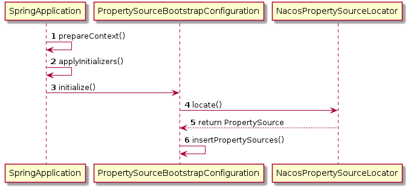

在了解NACOS客户端配置之前，我们先看看spring boot怎么样加载远程配置的。spring boot提供了加载远程配置的扩展接口 PropertySourceLocator。下面看个简单的例子：
public class GreizPropertySourceLocator implements PropertySourceLocator {
@Override
public PropertySource<?> locate(Environment environment) {
// 自定义配置，来源可以从任何地方
Map<String, Object> source = new HashMap<>();
source.put("userName", "Greiz");
source.put("userAge", 18);
return new MapPropertySource(GreizPropertySource.PROPERTY_NAME, source);
}
}PropertySourceLocator 只有一个接口，我们可以在该接口实现自定义配置的加载，比如从数据库中获取配置，或者文件中获取配置等。
@Configuration
public class GreizConfigBootstrapConfiguration {
@Bean
public GreizPropertySourceLocator greizPropertySourceLocator() {
return new GreizPropertySourceLocator();
}
}在META-INF/spring.factories添加启动指定加载类
org.springframework.cloud.bootstrap.BootstrapConfiguration=\
com.greiz.demo.config.GreizConfigBootstrapConfiguration@Component
public class Greiz {
@Value("${userName}")
private String name;
@Value("${userAge}")
private Integer age;
// 省getter/setter
}跟本地配置一样使用。

在spring启动prepareContext阶段会执行PropertySourceLocator所有实现类加载自定义的配置，最终添加到Environment中管理。
nacos客户端启动时加载远程配置就是用了上面的方式。下面我们根据源码看一下具体过程。NacosPropertySourceLocator 实现了 PropertySourceLocator，所以spring启动时会调用locate方法。
public PropertySource<?> locate(Environment env) {
// 1. 创建一个跟远程打交道的对象NacosConfigService
ConfigService configService = nacosConfigProperties.configServiceInstance();
... 省略代码
// 2. 操作NacosPropertySource对象，下面三个方法最终都会调用该对象build
nacosPropertySourceBuilder = new NacosPropertySourceBuilder(configService, timeout);
// 3.
String name = nacosConfigProperties.getName();
String dataIdPrefix = nacosConfigProperties.getPrefix();
if (StringUtils.isEmpty(dataIdPrefix)) {
dataIdPrefix = name;
}
if (StringUtils.isEmpty(dataIdPrefix)) {
dataIdPrefix = env.getProperty("spring.application.name");
}
// 从远程获取的properties会存放到该类，最终放到Environment中
CompositePropertySource composite = new CompositePropertySource(NACOS_PROPERTY_SOURCE_NAME);
// 加载公共模块配置
loadSharedConfiguration(composite);
// 加载扩展配置
loadExtConfiguration(composite);
// 加载独有配置
loadApplicationConfiguration(composite, dataIdPrefix, nacosConfigProperties, env);
return composite;
}1处 - 创建 ConfigService 对象，是通过反射创建出 NacosConfigService 实例。该类是Nacos Client 跟 Nacos Server 重要的对接者。后面会围绕该类细讲。
2处 - 创建 NacosPropertySourceBuilder 实例，用于构建和缓存 NacosPropertySource，刷新时会用到此处缓存。
3处 - 加载配置的顺序，公共配置 -> 扩展配置 -> 私有配置，如果有相同key的后面的覆盖前面的。默认的 Data ID 生成规则 ${spring.application.name}.properties。
加载三种配置最终都会调用 NacosPropertySourceBuilder.build() 方法。
NacosPropertySource build(String dataId, String group, String fileExtension, boolean isRefreshable) {
// 加载配置
Properties p = loadNacosData(dataId, group, fileExtension);
NacosPropertySource nacosPropertySource = new NacosPropertySource(group, dataId, propertiesToMap(p), new Date(), isRefreshable);
// 缓存nacosPropertySource
NacosPropertySourceRepository.collectNacosPropertySources(nacosPropertySource);
return nacosPropertySource;
}加载配置后封装nacosPropertySource，并缓存。
主要逻辑在 NacosPropertySourceBuilder.loadNacosData() 中。
private Properties loadNacosData(String dataId, String group, String fileExtension) {
// 获取配置
String data = configService.getConfig(dataId, group, timeout);
... 省略代码
// .properties扩展名
if (fileExtension.equalsIgnoreCase("properties")) {
Properties properties = new Properties();
properties.load(new StringReader(data));
return properties;
} else if (fileExtension.equalsIgnoreCase("yaml") || fileExtension.equalsIgnoreCase("yml")) {// .yaml或者.yml扩展名
YamlPropertiesFactoryBean yamlFactory = new YamlPropertiesFactoryBean();
yamlFactory.setResources(new ByteArrayResource(data.getBytes()));
return yamlFactory.getObject();
}
return EMPTY_PROPERTIES;
}把远程获取到的数据根据扩展名解析成统一的properties。nacos控制台配置支持properties和yaml两个扩展名。
真正获取远程配置的是 NacosConfigService.getConfig(), 调用getConfigInner()。
private String getConfigInner(String tenant, String dataId, String group, long timeoutMs) throws NacosException {
group = null2defaultGroup(group);
ParamUtils.checkKeyParam(dataId, group);
ConfigResponse cr = new ConfigResponse();
cr.setDataId(dataId);
cr.setTenant(tenant);
cr.setGroup(group);
// 1. 优先使用failvoer配置
String content = LocalConfigInfoProcessor.getFailover(agent.getName(), dataId, group, tenant);
if (content != null) {
cr.setContent(content);
configFilterChainManager.doFilter(null, cr);
content = cr.getContent();
return content;
}
try {
// 2. 服务器获取配置
content = worker.getServerConfig(dataId, group, tenant, timeoutMs);
cr.setContent(content);
configFilterChainManager.doFilter(null, cr);
content = cr.getContent();
return content;
} catch (NacosException ioe) {
if (NacosException.NO_RIGHT == ioe.getErrCode()) {
throw ioe;
}
}
// 3. 当服务器挂了就拿本地快照
content = LocalConfigInfoProcessor.getSnapshot(agent.getName(), dataId, group, tenant);
cr.setContent(content);
configFilterChainManager.doFilter(null, cr);
content = cr.getContent();
return content;
}1处 - 优先从failvoer获取配置，该文件是怎么样产生的，我暂时还不是很清楚，后面搞懂补充。
2处 - 从nacos服务中获取配置。
3处 - 如果2失败了就从本地快照文件获取。该文件由首次读取远程配置文件生成，并且之后轮询配置更新时如果有更新也会对应更新该文件。
访问服务接口的脏活当然需要一个客户端工作者ClientWorker，下面是 NacosConfigService.getConfig() 中调用 ClientWorker.getServerConfig()。
public String getServerConfig(String dataId, String group, String tenant, long readTimeout)
throws NacosException {
// 就是这么简单http请求获取的配置
HttpResult result = agent.httpGet(Constants.CONFIG_CONTROLLER_PATH, null, params, agent.getEncode(), readTimeout);
... 省略代码
// 写本地文件快照
LocalConfigInfoProcessor.saveSnapshot(agent.getName(), dataId, group, tenant, result.content);
...省略代码
return result.content;
}看了上面获取远程配置的代码是不是想喊出f**k，怎么这么简单！！！是的，用http请求 http://ip:port/v1/cs/configs 接口，跟nacos控制台页面访问是一样的。
到此Nacos Client启动读取远程配置并封装到Environment结束了。
前一小节是对项目启动时Nacos Client加载远程配置过程分析，本节将对项目运行中配置改变了Nacos Client是怎么样悉知的分析。
前面提到 NacosConfigService 是 Nacos Client 对接 Nacos Server 的桥梁，下面看一下该类在配置更新过程怎么样运作的。先看一下 NacosConfigService 的构造方法。
public NacosConfigService(Properties properties) throws NacosException {
... 省略代码
// 初始化 namespace
initNamespace(properties);
// 查询服务列表变化情况
agent = new MetricsHttpAgent(new ServerHttpAgent(properties));
agent.start();
// 配置更新解决方案在这里面
worker = new ClientWorker(agent, configFilterChainManager, properties);
}在构造函数中初始化 encode、namespace、HttpAgent 和 ClientWorker。
HttpAgent 是通过http获取服务地址列表代理类，维护这服务地址列表和客户端本地一致。
ClientWorker 是维护服务端配置和客户端配置一致的工作者。前面初始化获取远程配置时也是该对象。
ClientWorker 内部是怎么样维护客户端属性更新呢？看一下 ClientWorker 构造函数干了啥。
public ClientWorker(final HttpAgent agent, final ConfigFilterChainManager configFilterChainManager, final Properties properties) {
...省略代码
executor = Executors.newScheduledThreadPool(1, new ThreadFactory() {
...省略代码
});
executorService = Executors.newScheduledThreadPool(Runtime.getRuntime().availableProcessors(), new ThreadFactory() {
...省略代码
});
// 每10毫秒检查一遍配置
executor.scheduleWithFixedDelay(new Runnable() {
@Override
public void run() {
try {
checkConfigInfo();
} catch (Throwable e) {
LOGGER.error("[" + agent.getName() + "] [sub-check] rotate check error", e);
}
}
}, 1L, 10L, TimeUnit.MILLISECONDS);
}ClientWorker 构造函数创建了两个线程池。executor 创建了一个定时任务，每10毫秒执行一次 checkConfigInfo()； executorService 作用是什么我们接着往下看。
public void checkConfigInfo() {
// 分任务 向上取整为批数
int listenerSize = cacheMap.get().size();
int longingTaskCount = (int) Math.ceil(listenerSize / ParamUtil.getPerTaskConfigSize());
if (longingTaskCount > currentLongingTaskCount) {
for (int i = (int) currentLongingTaskCount; i < longingTaskCount; i++) {
executorService.execute(new LongPollingRunnable(i));
}
currentLongingTaskCount = longingTaskCount;
}
}以分段方式把任务拆分交给 executorService 执行，默认3000个配置在一个任务中。executor 和 executorService 是不是很像 Netty 中的 boos 和 worker？ Reactor 模式，分工明确。
LongPollingRunnable 是 ClientWorker 一个成员类，实现 Runnable 接口。看一下 run() 方法。
public void run() {
List<CacheData> cacheDatas = new ArrayList<CacheData>();
List<String> inInitializingCacheList = new ArrayList<String>();
try {
// 1. 只处理该任务中的配置并且检查failover配置
for (CacheData cacheData : cacheMap.get().values()) {
if (cacheData.getTaskId() == taskId) {
cacheDatas.add(cacheData);
try {
checkLocalConfig(cacheData);
if (cacheData.isUseLocalConfigInfo()) {
cacheData.checkListenerMd5();
}
} catch (Exception e) {
LOGGER.error("get local config info error", e);
}
}
}
// 2. 把客户端的MD5值跟服务端的MD5比较，把不一样的配置以 "example.properties+DEFAULT_GROUP"方式返回
List<String> changedGroupKeys = checkUpdateDataIds(cacheDatas, inInitializingCacheList);
// 3. 把有更新的配置重新从服务端拉取配置内容
for (String groupKey : changedGroupKeys) {
String[] key = GroupKey.parseKey(groupKey);
String dataId = key[0];
String group = key[1];
String tenant = null;
if (key.length == 3) {
tenant = key[2];
}
try {
String content = getServerConfig(dataId, group, tenant, 3000L);
CacheData cache = cacheMap.get().get(GroupKey.getKeyTenant(dataId, group, tenant));
// 修改客户端本地值并且重新计算该对象的md5值
cache.setContent(content);
} catch (NacosException ioe) {
...省略代码
}
}
for (CacheData cacheData : cacheDatas) {
if (!cacheData.isInitializing() || inInitializingCacheList.contains(GroupKey.getKeyTenant(cacheData.dataId, cacheData.group, cacheData.tenant))) {
// 4. 根据md5值检查是否更新，如果更新通知listener
cacheData.checkListenerMd5();
cacheData.setInitializing(false);
}
}
inInitializingCacheList.clear();
// 5. 又把this放进线程池中，形成一个长轮询检查客户端和服务端配置一致性
executorService.execute(this);
} catch (Throwable e) {
executorService.schedule(this, taskPenaltyTime, TimeUnit.MILLISECONDS);
}
}1处 - 筛选属于该任务的配置，并检查 failover 配置。
2处 - 把配置以"dataId group MD5 tenant\r\n"拼接后当做参数请求服务器 http://ip:port/v1/cs/configs/listener 接口。服务器返回有更新的配置，以 "example.properties+DEFAULT_GROUP"方式返回
3处 - 根据2处返回的列表遍历请求服务器 http://ip:port/v1/cs/configs 接口，获取最新配置。然后更新CacheData content值并更新md5值。
4处 - 把 CacheData 新的md5值跟之前的做比较，如果不一样就通知监听者更新值。下一节会跟进去详解。
5处 - 把该 Runnable 对象重新放入线程池，形成一个长轮询。
本节分析了 Nacos Client 配置是怎么样保持跟服务器接近实时同步的。通过长轮询+http短连接方式。
在开始本节之前，我们先看一下上面多次出现的一个类 CacheData 结构。
public class CacheData {
private final String name;
private final ConfigFilterChainManager configFilterChainManager;
public final String dataId;
public final String group;
public final String tenant;
// 监听列表
private final CopyOnWriteArrayList<ManagerListenerWrap> listeners;
// 内容md5值
private volatile String md5;
// 是否使用本地配置
private volatile boolean isUseLocalConfig = false;
// 本地版本号
private volatile long localConfigLastModified;
private volatile String content;
// 长轮询中分段任务ID
private int taskId;
private volatile boolean isInitializing = true;
...省略代码
}根据名字可以得知， CacheData 是配置数据缓存中的对象。listeners 属性比较有意思，在 BO 中拥有一个监听列表，当该对象md5改变时会通过遍历 listeners 通知监听者们。
前一节从服务端获取到有更新的配置之后会检查md5，调用 CacheData.checkListenerMd5()方法：
void checkListenerMd5() {
for (ManagerListenerWrap wrap : listeners) {
if (!md5.equals(wrap.lastCallMd5)) {
safeNotifyListener(dataId, group, content, md5, wrap);
}
}
}class ManagerListenerWrap {
final Listener listener;
String lastCallMd5 = CacheData.getMd5String(null);
... 省略代码
}ManagerListenerWrap 的 lastCallMd5 是旧配置的md5值，如果 CacheData 的md5和 ManagerListenerWrap 的lastCallMd5 值不一样，说明配置有更新。需要通知未更新的监听者。
private void safeNotifyListener(final String dataId, final String group, final String content, final String md5, final ManagerListenerWrap listenerWrap) {
final Listener listener = listenerWrap.listener;
Runnable job = new Runnable() {
@Override
public void run() {
... 省略代码
// 调用监听者的方法
listener.receiveConfigInfo(contentTmp);
listenerWrap.lastCallMd5 = md5;
... 省略代码
}
};
try {
if (null != listener.getExecutor()) {
listener.getExecutor().execute(job);
} else {
job.run();
}
} catch (Throwable t) {
}
}调用了监听者的 receiveConfigInfo() 方法，然后修改 ManagerListenerWrap 的lastCallMd5 值。
本节到这里分析了从服务端获取更新配置后通知配置监听者。但是监听者是什么时候注册的呢？接下来我们继续分析监听者注册到 CacheData 过程。
NacosContextRefresher 实现了ApplicationListener
private void registerNacosListener(final String group, final String dataId) {
Listener listener = listenerMap.computeIfAbsent(dataId, i -> new Listener() {
// 通知监听者调用的就是这个方法啦
@Override
public void receiveConfigInfo(String configInfo) {
refreshCountIncrement();
String md5 = "";
if (!StringUtils.isEmpty(configInfo)) {
try {
MessageDigest md = MessageDigest.getInstance("MD5");
md5 = new BigInteger(1, md.digest(configInfo.getBytes("UTF-8"))).toString(16);
}
catch (NoSuchAlgorithmException | UnsupportedEncodingException e) {
log.warn("[Nacos] unable to get md5 for dataId: " + dataId, e);
}
}
refreshHistory.add(dataId, md5);
// spring的刷新事件通知，刷新监听者会被执行
applicationContext.publishEvent(new RefreshEvent(this, null, "Refresh Nacos config"));
}
@Override
public Executor getExecutor() {
return null;
}
});
// 注册本监听者
configService.addListener(dataId, group, listener);
...省略代码
}通过 NacosConfigService.addListener()注册监听者。
NacosConfigService.addListener()：
public void addListener(String dataId, String group, Listener listener) throws NacosException {
worker.addTenantListeners(dataId, group, Arrays.asList(listener));
}还是交给了 ClientWorker
ClientWorker.addTenantListeners()
public void addTenantListeners(String dataId, String group, List<? extends Listener> listeners) throws NacosException {
group = null2defaultGroup(group);
String tenant = agent.getTenant();
CacheData cache = addCacheDataIfAbsent(dataId, group, tenant);
for (Listener listener : listeners) {
cache.addListener(listener);
}
}ClientWorker 把监听者交给了 CacheData 完成了注册。
汇总系统运行中更新配置的流程：
Nacos Config Client 和 Nacos Config Server 采用定时长轮询http请求访问配置更新，这样设计 Nacos Config Server 和 Config Client 结构简单。Server 也没有长连接模式Client过多的压力。
我的博客即将同步至腾讯云+社区，邀请大家一同入驻：https://cloud.tencent.com/developer/support-plan?invite_code=16l9glm94a1q9